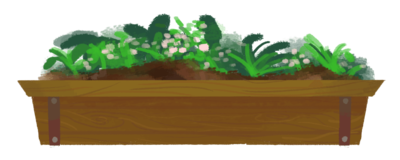
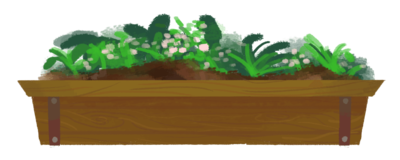
 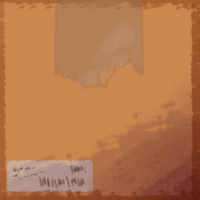
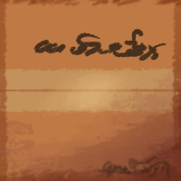
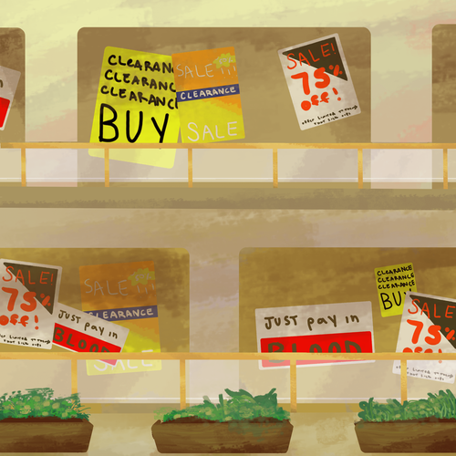
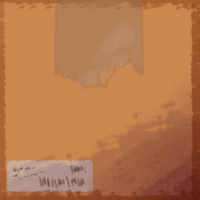
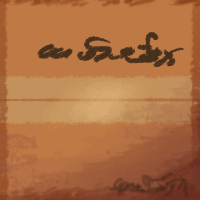
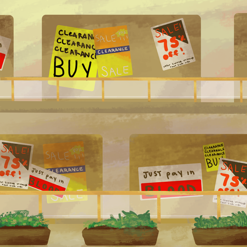
Animating
This was my first time doing art digitally, so I used the free program Krita to experiment with. This was a huge learning experience as I learned about animation. The three animations (run, jump, grab) took about a week and a half to do since I had no base knowledge, but I had a fun time doing it!
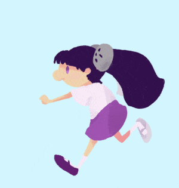
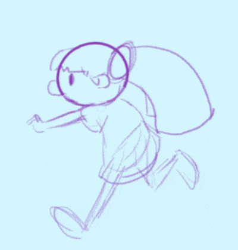
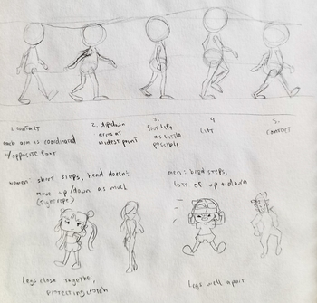